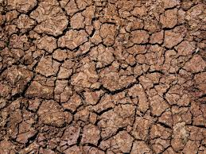
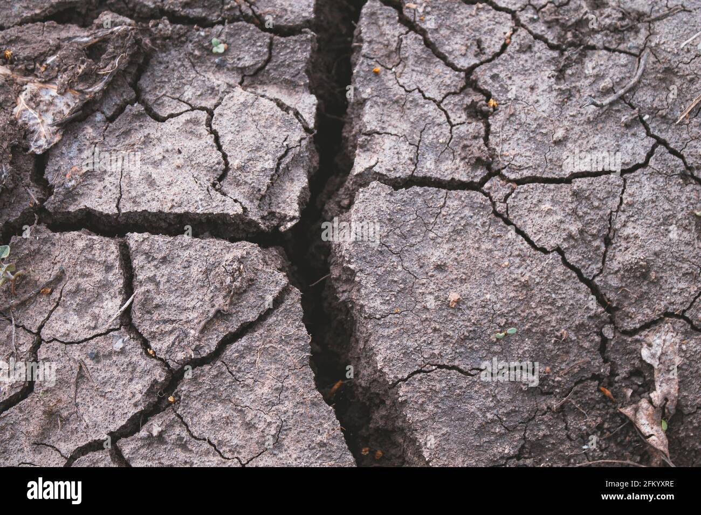
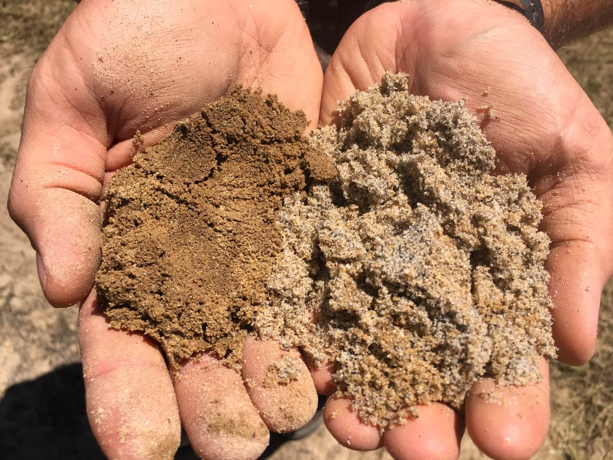
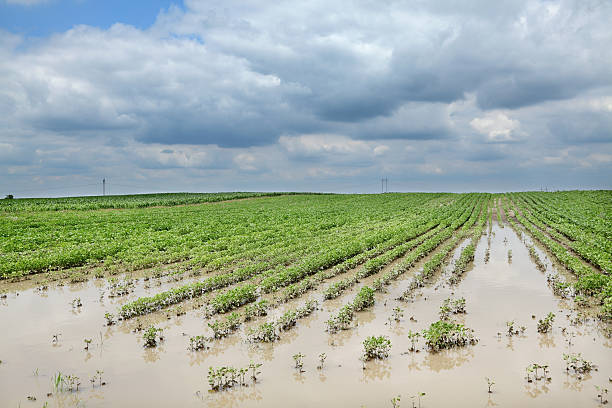

Select your soil condition

Dry
Dry soil lacks moisture and nutrients. Farmers should use mulch, compost, and drought-resistant crops.

Cracked
Cracks mean water loss and poor organic matter. Compost, cover crops, and reduced tillage help improve it.

Sandy
Sandy soil drains water quickly and loses nutrients. Adding compost and frequent light irrigation helps crops grow.

Wet/Waterlogged
Wet soil lacks air for roots. Drainage channels, raised beds, and controlled irrigation prevent damage.